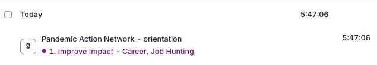
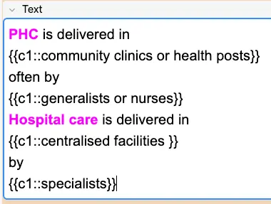
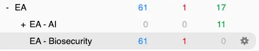
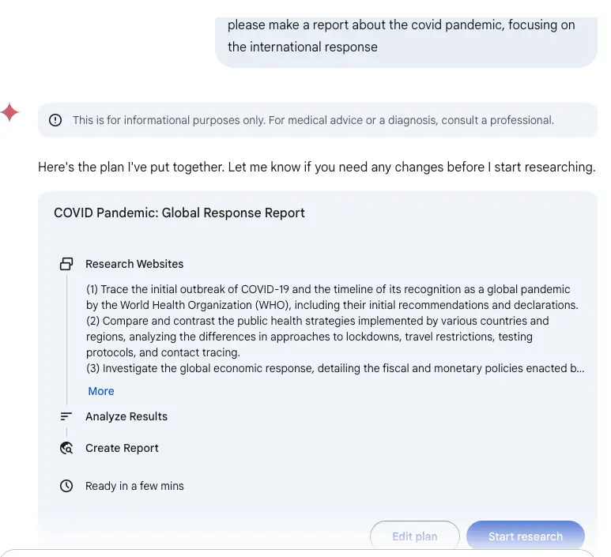
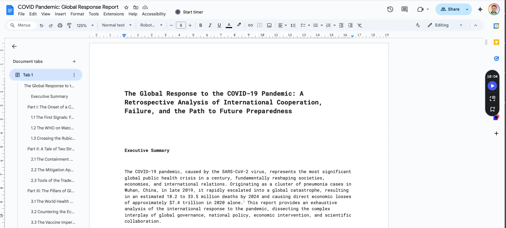
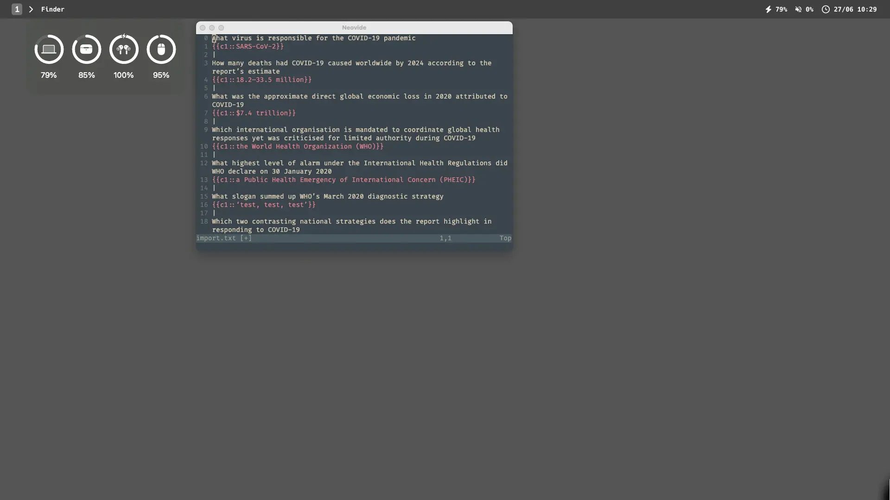
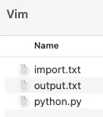
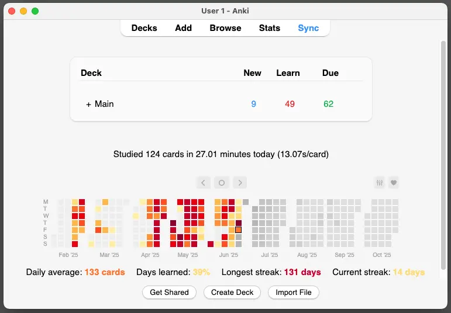
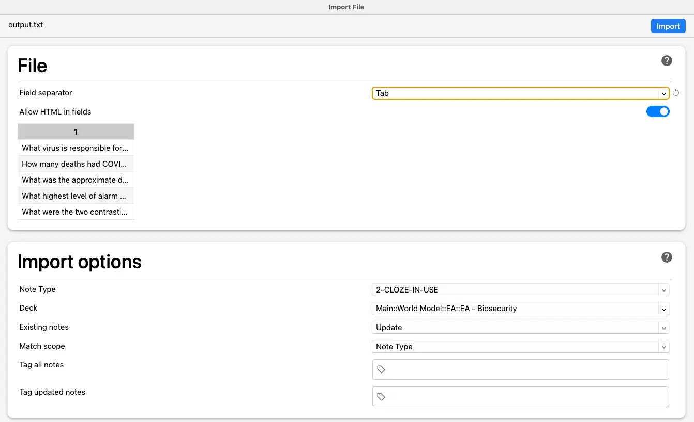
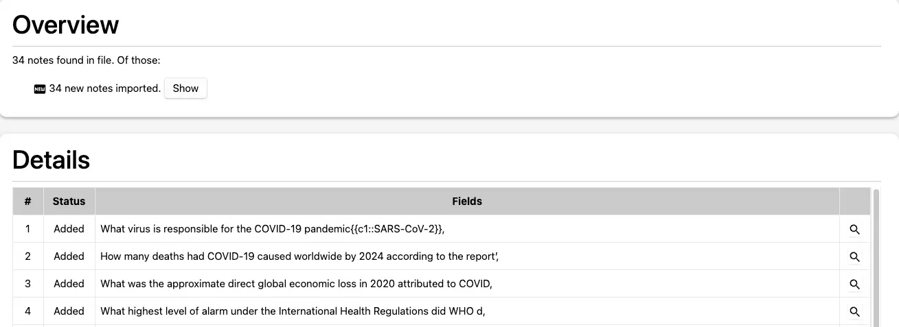

- See also - Twitch stream 2025-06-27 - reviewing WHO and COVID response flashcards
- 👇 Almost 6 hours of tracked work today

1. WHO flashcards
- Three 25-minute pomodoros to:
- Make a Gemini deep research report on the WHO
- Read the deep research report (link (with Speechify, speed at 2.5x)
- Make flashcards with Gemini 2.5 Pro and my “make me flashcards prompt”, stored in text expander app espanso, accessed by typing
:flash - Edit the flashcards in neovim — AI isn’t great at making flashcards yet, but it speeds up the process, reduces friction by a huge amount
- Import flashcards into anki
- Review the flashcards in anki, editing as needed (e.g., adding photos, adding colour to text)
- Also making additional ones as needed
- e.g. - realising that I don’t know what “primary health care” is:

- Now have 61 new ones to review

1
The World Health Organisation (WHO) is the principal international authority dedicated to {{c1::global public health}}
|
The WHO's vision is
"{{c1::a world in which all peoples
attain the highest possible level of health}}"
|
The WHO's mission is (3 things)
{{c1::promote health}},
{{c1::ensure global safety}},
and {{c1::serve vulnerable populations}}
|
The WHO constitution was adopted in year {{c1::1948}}
|
The WHO's broad definition of health encompasses social determinants like
(3 things)
{{c1::education,
housing,
economic stability}}
|
A criticism of the WHO's definition of health is that
{{c1::it may be expanding its scope
beyond what it can effectively handle}}
|
The idea for a global health organisation was proposed at
{{c1::the United Nations Conference}}
in year {{c1::1945}}
|
The WHO is a specialised agency of
{{c1::the United Nations}}
|
The WHO's structure as
{{c1::an intergovernmental organisation}}
limits its enforcement power, as
{{c1::it relies on the voluntary compliance of member states}}
|
The WHO's central headquarters is located in
{{c1::Geneva, Switzerland}}
|
The supreme decision-making body of the WHO is
{{c1::the World Health Assembly (WHA)}}
|
In global health, WHA stands for
{{c1::World Health Assembly}}
|
One of the WHO's core functions is setting global health {{c1::norms and standards}}
|
The effectiveness of the WHO's normative power is contingent on
{{c1::the political will and capacity
of its member states
to implement global standards}}
|
A critical responsibility of the WHO is to lead and coordinate
{{c1::the global response to health crises}}
|
The {{c1::International Health Regulations (IHR)}} are a legal framework
defining countries' obligations
in managing public health events with international implications
|
In global health, PHEIC stands for
{{c1::Public Health Emergency of International Concern}}
|
The WHO's Director-General has the authority to declare a {{c1::PHEIC}}
|
In global health, WHE stands for
WHO Health Emergencies Programme
|
The WHE faces challenges such as
(2 things)
{{c1::
Delays in recruitment
Insufficient security support for staff in high-risk areas}}
|
A major financial challenge for the WHO is that
{{c1::a large portion of its funding is earmarked,
which limits flexibility in resource allocation}}
|
The WHO's response to major crises
like Ebola and the COVID-19 pandemic
was perceived by some as
{{c1::"too slow"}}
|
The WHO promotes
{{c1::PHC}}
as the foundational approach for achieving
{{c2::UHC}}
|
A monumental achievement of the WHO was
{{c1::the declaration of the eradication of smallpox}}
in year {{c1::1980}}
|
The Global Polio Eradication Initiative was launched by the WHO in {{c1::1988}}
2
The GPEI's strategy has resulted in
{{c1::over a 99% reduction in global polio incidence}}
|
The two countries where wild poliovirus transmission may not have been fully interrupted are
{{c1::Pakistan}}
and
{{c1::Afghanistan}}
|
Key factors for the success of disease eradication campaigns include
(3 things)
{{c1::a disease reservoir exclusively in humans
effective vaccines,
and sustained global political will}}
|
The WHO's initial response to the
{{c1::HIV/AIDS epidemic}}
was characterised by staff downplaying the severity of the crisis
|
{{c1::UNAIDS}}
was created to spearhead the global HIV/AIDS response,
partly because
{{c1::the WHO's initial response was perceived as insufficient}}
|
The "{{c1::95-95-95}}" targets for HIV/AIDS
aim for
(4 lines)
{{c1::95% of people with HIV to know their status,
95% on treatment,
and 95% with viral suppression
by 2025}}
|
Major risk factors for NCDs include
(5 things)
{{c1::tobacco use,
physical inactivity,
harmful alcohol consumption,
unhealthy diets,
air pollution}}
|
Preventing NCDs requires a {{c1::multi-sectoral}} approach
that {{c1::extends beyond traditional medical interventions
to engage with industries like food, tobacco, and alcohol}}
|
The WHO's ambitious target is to ensure
{{c1::one billion more}} people benefit from UHC
by
year {{c1::2025}}
|
Despite being a strategic priority, progress towards
{{c1::UHC}}
has stagnated since 2015
|
In 2021, an estimated {{c1::4.5 billion}} people
were not fully covered by essential health services
|
The WHO advocates for a
{{c1::PHC}} approach
as the most effective and cost-efficient way to achieve
{{c2::UHC}}
|
The WHO {{c1::WHE}}
works with countries and partners
to
{{c2::prepare for, prevent, detect, and respond to disease outbreaks}}
|
Operational challenges for the WHE include (3 things)
{{c1::delays in recruitment,
the absence of an integrated supply chain,
and inadequate security support for staff}}
|
The WHO's funding is derived from two primary sources:
{{c1::assessed contributions (ACs)}}
and
{{c1::voluntary contributions (VCs)}}
|
When talking about the WHO
AC stands for {{c1::Assessed Contribution}}
VC stands for {{c1::Voluntary Contribution}}
|
WHO ACs are
{{c1::mandatory membership dues from Member States }}
and historically have
{{c1::covered less than 20% of the total budget}}
|
VCs constitute the vast majority of the WHO's financing,
making up
{{c1::81%}}
of total funding in the 2022-23 period
|
Major VCs to the WHO include
(5)
{{c1::The US
Germany
The GAVI Alliance
The European Commission
The Bill & Melinda Gates Foundation}}
}}
|
The WHO's heavy reliance on
{{c1::VCs}}
Creates a fundamental vulnerability for the organisation
3
The World Health Organisation's (WHO) financial structure significantly influences its
{{c1::operational flexibility}} and
{{c1::strategic autonomy}}
|
WHO ACs are calculated based on
{{c1::a country's wealth and population}}
|
(Problem)
While WHO ACs are {{c1::flexible}},
VCs are "{{c1::overwhelmingly earmarked}}",
meaning
{{c1::donors dictate how the funds are used}}
|
The earmarked nature of VCs effectively
"{{c1::transfers power from WHO to donors}}"
|
Earmarked funding can impede
{{c1::swift responses in emergencies }}
and
{{c1::complicate long-term planning}}
as
{{c1::funds are tied to short-term donor interests}}
|
The WHO's CFE stands for
{{c1::Contingency Fund for Emergencies}}
|
The WHO's {{c1::CFE}} has been reported as drying up"
|
A recent WHO decision aims to
Increase {{c1::ACs}} to cover {{c1::50%}} of the WHO's base budget
by {{c1::2030}}
|
Beyond smallpox and polio,
the WHO has significantly reduced mortality from diseases like
{{c1::malaria and tuberculosis}} through its programmes
|
A key strength of the WHO is its ability to strengthen health systems by
(3 things)
{{c1::improving infrastructure,
training healthcare workers,
and promoting robust health information systems}}.
|
The WHO's greatest strength lies in its
{{c1::convening power}}
and
{{c1::normative authority}},
|
Critics argue the WHO's IHR framework
{{c1::has a "lack of teeth"
in its legal enforcement mechanisms}}
|
The commitment to
{{c1::increase ACs to 50% of the base budget by 2030}}
is considered the cornerstone of WHO's transformation"
2. COVID response flashcards
Make the report
- Link to report
- I love Gemini Deep Research so much

Initial read (with speechify)

- Read whilst listening at a relatively high speed. I find that speechify massively reduces willpower needed to read, as someone else is setting the pace (the person who is reading out loud)
Make flashcards with Gemini
- As per My “make flashcards for me” prompt for AI
- I often chop the original PDF into multiple, so make sure that Gemini makes in depth flashcards, as often there seems to be an output limit
- So I’ve just exported pages 1-6, 6-10, 10-15, 15-18 and 18-21 to separate PDFs, to ensure I get thorough flashcards from each
Put the first round of flashcards into Neovim (Neovide), & edit
- I have a .txt file called import.txt where I put flashcards to be edited

- Often need to add more line breaks to make the flashcards faster to parse
- And may need to make additional flashcards, or delete some that I already know/don’t want to know
- I have the
:flashprompt for making flashcards via AI use the ”|” on a new line to separate the flashcards for my own readability & ease of editing whilst in neovim. Before importing to anki, I use a Python script to clean up the .txt file to be a format that works for Anki’s import feature
Deleting flashcards
- Here’s an example of one I just deleted
Which activity did central banks in the US and Europe undertake
to stabilise markets besides cutting rates
{{c1::large-scale asset purchase programmes}}
- I know essentially nothing about global finance, so this would be a total “orphan card” in my brain - a random card not attached to any other knowledge
- Right now I don’t have capacity/interest to go deep on this topic, so it’s better just to avoid it entirely until there’s a more clear need
Running my python script to convert the .txt file formatting
- From this kind of formatting:
What virus is responsible for the COVID-19 pandemic
{{c1::SARS-CoV-2}}
|
How many deaths had COVID-19 caused worldwide by 2024 according to the report’s estimate
{{c1::18.2–33.5 million}}
|
What was the approximate direct global economic loss in 2020 attributed to COVID-19
{{c1::$7.4 trillion}}
|
- To this kind of formatting:
What virus is responsible for the COVID-19 pandemic<br />{{c1::SARS-CoV-2}}
How many deaths had COVID-19 caused worldwide by 2024 according to the report’s estimate<br />{{c1::18.2–33.5 million}}
What was the approximate direct global economic loss in 2020 attributed to COVID-19<br />{{c1::$7.4 trillion}}
- Via this python script:
- Which I run by typing ! python3 python.py into neovide (yes, the file is called python.py, I know that’s dumb as hell, lol)
# Python script to preprocess a text file for Anki import.
#
# How it works:
# - Reads an input file (e.g., 'import.txt').
# - Assumes flashcards in the input file are separated by a pipe symbol '|'.
# - Content for a single flashcard can span multiple lines.
# - Converts each flashcard into a single line in the output file (e.g., 'output.txt').
# - Internal newlines within a flashcard are replaced by '<br />' for Anki.
# - Clears the input file upon successful output.
def preprocess_anki_text(input_filepath, output_filepath):
"""
Processes a text file for Anki import and clears the input file on success.
Args:
input_filepath (str): The path to the input text file.
output_filepath (str): The path where the processed text file will be saved.
"""
try:
with open(input_filepath, 'r', encoding='utf-8') as f_in:
content = f_in.read()
print(f"Successfully read '{input_filepath}'.")
except FileNotFoundError:
print(f"Error: Input file '{input_filepath}' not found. Make sure it's in the same directory as the script.")
return
except Exception as e:
print(f"Error reading file '{input_filepath}': {e}")
return
# Split the entire content by the pipe character
# This treats '|' as the delimiter between separate cards
raw_cards = content.split('|')
processed_cards = []
for card_text in raw_cards:
# Remove leading/trailing whitespace and newlines from the segment
stripped_card_text = card_text.strip()
if stripped_card_text: # Ensure the card has content after stripping
# Replace internal newlines (within the card's own content) with HTML line breaks
single_line_card = stripped_card_text.replace('\n', '<br />')
processed_cards.append(single_line_card)
try:
with open(output_filepath, 'w', encoding='utf-8') as f_out:
for card in processed_cards:
f_out.write(card + '\n') # Write each processed card on a new line
print(f"Successfully processed file. Output saved to '{output_filepath}'.")
print(f"You can now import '{output_filepath}' into Anki.")
print("Remember to 'Allow HTML in fields' in Anki's import settings.")
# Now, clear the input file
try:
with open(input_filepath, 'w', encoding='utf-8') as f_in_clear:
f_in_clear.write('') # Write an empty string to clear it
print(f"Successfully cleared the input file: '{input_filepath}'.")
except Exception as e:
print(f"Error clearing the input file '{input_filepath}': {e}")
except IOError:
print(f"Error: Could not write to output file '{output_filepath}'. Check permissions.")
except Exception as e:
print(f"Error writing file '{output_filepath}': {e}")
# --- Script Execution ---
if __name__ == "__main__":
# Define the input and output filenames
# The script expects 'import.txt' to be in the same directory as this script.
# The output file 'output.txt' will also be created in the same directory.
input_filename = 'import.txt'
output_filename = 'output.txt'
print(f"Starting preprocessing for Anki...")
print(f"Input file: {input_filename}")
print(f"Output file: {output_filename}")
preprocess_anki_text(input_filename, output_filename)
- The above looks for a file called import.txt, cleans it up, saves the output to output.txt, and wipes import.txt so it’s empty and ready for future flashcards
- All the files need to be in the same directory:

Import into anki
- 👇 “Import file” at the bottom



Flashcards
- Ah, I imported the first round into anki and forgot to port them here
Round 2
On what date did authorities seal off the entire city of Wuhan, initiating the strictest lockdown of the pandemic
{{c1::23 January 2020}}
|
By the end of 2020, what was China’s reported COVID-19 mortality rate per 100 000 population
{{c1::0.3}}
|
What was the United States’ mortality rate per 100 000 population by 31 December 2020
{{c1::107}}
|
How many times higher was the UK mortality rate than China’s by the end of 2020
{{c1::over 200 times}}
|
What label is given to the early 2020 period when many countries delayed decisive measures
{{c1::the “lost month”}}
|
What controversial initial strategy did the UK government consider before imposing lockdown
{{c1::achieving herd immunity through controlled spread}}
|
Early international travel restrictions delayed countries’ first epidemic peak by an average of how many weeks
{{c1::five}}
|
Define the containment strategy’s primary epidemiological aim in one phrase
{{c1::suppress transmission to the lowest possible level}}
|
Define the mitigation strategy’s aim commonly expressed in the West
{{c1::flatten the curve to prevent health-system overload}}
|
What political condition within the United States
is repeatedly cited as impeding a unified response
{{c1::federal political division}}
|
Which health-equity failure does the report label both a moral and strategic lapse
{{c1::vaccine nationalism undermining COVAX}}
|
What systemic weakness
did delayed Western lockdowns reveal
about reliance on hospital capacity
{{c1::reactive responses only triggered once beds were threatened}}
|
Why is the pandemic said to have
fractured global supply chains
{{c1::over-concentration on efficiency
created vulnerabilities in crises}}
|
Containment countries triaged mild COVID-19 cases
to what type of facility to preserve hospitals
{{c1::dedicated residential treatment centres}}
|
What strategic error does the report say
“preparedness on paper”
cannot compensate for
{{c1::lack of decisive collective action}}
|
Define “travel restrictions” in the pandemic context in one clause
{{c1::border controls limiting or screening international arrivals}}
|
Which factor, alongside strong state capacity,
helped East Asian nations secure compliance with restrictions
{{c1::prior epidemic experience such as SARS or MERS}}
|
What legal designation under international law is abbreviated as PHEIC
{{c1::Public Health Emergency of International Concern}}
|
In mitigation settings,
what was the implicit end-point
expected to halt the pandemic besides vaccination
{{c1::population (herd) immunity through natural infection}}
|
Which contact-tracing innovation
allowed Germany to support its containment-aligned testing strategy
{{c1::rapid scale-up of decentralised public-health tracing teams}}
Round 3
By what date had WHO issued its first full technical guidance package to all countries
{{c1::10 January 2020}}
|
Roughly how many individual guidance documents did WHO publish during the pandemic
{{c1::more than 100}}
|
Which independent review finding said WHO should have declared a PHEIC a week earlier than it did
{{c1::critique of timeliness}}
|
What accusation questioned WHO’s neutrality towards China
in the outbreak’s first phase
{{c1::political deference undermining independence}}
|
What structural flaw
leaves WHO unable to enforce its recommendations
{{c1::lack of sovereign authority
under the International Health Regulations}}
|
How much did the world’s GDP shrink in 2020 according to the report
{{c1::3.3 percent}}
|
What direct economic loss in 2020 is estimated in comparison with pre-pandemic forecasts
{{c1::about $7.4 trillion}}
|
Which US programme launched in May 2020 to speed domestic vaccine development and delivery
{{c1::Operation Warp Speed}}
|
Rough initial public funding for Operation Warp Speed
{{c1::about $10 billion}}
|
Global partnership launched April 2020
to ensure equal access to COVID-19 tools
{{c1::the ACT Accelerator}}
|
What is the vaccine pillar of the ACT Accelerator called
{{c1::COVAX Facility}}
|
Number of economies that eventually participated in COVAX
{{c1::over 190}}
|
How many low- and middle-income “AMC” economies were to receive donor-funded doses
{{c1::92}}
|
Total vaccine doses COVAX had delivered when the report was written
{{c1::nearly 2 billion}}
|
Key obstacle that repeatedly delayed COVAX deliveries
{{c1::vaccine nationalism and bilateral hoarding}}
|
Month and year when COVAX reached its first
100 million doses delivered
{{c1::July 2021}}
|
Two state producers that used “vaccine diplomacy”
to expand influence amid Western shortages
{{c1::China and Russia}}
|
What paradox of global health governance
does the report highlight regarding WHO authority
{{c1::states want strong leadership but won’t cede sovereignty}}
|
Primary moral and strategic failure
identified in unequal vaccine distribution
{{c1::undermining global equity
and allowing new variants to arise}}
|
Which supply-side factor
forced India to halt vaccine exports
{{c1::domestic Delta wave
leading to export bans}}
Round 4
What are the two main scientific hypotheses for the origin of SARS-CoV-2
{{c1::natural zoonotic spill-over
and a laboratory-associated accident}}
|
Which Wuhan facility is central to the lab-leak hypothesis
{{c1::the Wuhan Institute of Virology}}
|
What missing piece of evidence still weakens the natural spill-over theory
{{c1::identification of a definitive intermediate animal host}}
|
Which viral feature is often cited by lab-leak proponents as unusual
{{c1::the furin cleavage site in the spike protein}}
|
What overall judgement does the US Intelligence Community share
about SARS-CoV-2 as a weapon
{{c1::the virus was not developed as a biological weapon}}
|
How did Chinese authorities impede a transparent origin investigation
(3 things)
{{c1::restricting WHO access,
withholding raw data
ordering destruction of early samples}}
|
Name one disinformation narrative Beijing promoted
about the virus’s origin
{{c1::the claim it emerged from the US military base
at Fort Detrick}}
|
What geopolitical consequence has the unresolved origin debate produced
{{c1::deepened mistrust and rivalry between China and the United States}}
|
Name three key trends businesses are adopting
to build post-pandemic supply resilience
{{c1::Digitalisation
Diversification
regionalisation }}
|
What strategic priority has overtaken pure {{c1::efficiency }}
in global supply management
{{c1::resilience}}
|
Roughly how many deaths in lower-income countries were averted by COVAX deliveries
{{c1::about 2.7 million}}
|
Which African nation received the first COVAX shipment in February 2021
{{c1::Ghana}}
|
How many months late was COVAX in reaching its first 100 million doses delivered
{{c1::about four months}}
|
How did logistics deadlock affect shipping times and costs during the pandemic
{{c1::Port congestion and container shortages
Caused unprecedented delays and price spikes}}
|
Which metric demonstrates the fragility of
air-cargo reliance revealed by the pandemic
{{c1::Loss of belly-cargo capacity when passenger flights were grounded}}
Round 5
What existing international legal framework for pandemics
Is described as no longer fit for purpose
{{c1::IHR 2005}}
|
State the two primary goals at the heart of the proposed Pandemic Accord
{{c1::To make future pandemics less deadly
and to reduce their likelihood}}
|
Which proposed treaty provision creates a mechanism for
Rapid pathogen sharing
In exchange for
Equitable access to countermeasures
{{c1::PABS}}
|
Under the PABS proposal,
what must countries and companies share quickly
when a new threat appears
{{c1::pathogen samples and genetic sequence data}}
|
List the three domains in which the COVID pandemic showed
a profound deficit of trust
{{c1::between citizens and governments,
between political factions,
and between nations}}
|
During a pandemic, who should deliver nuanced public-health messages to maintain trust?
{{c1::Diverse local messengers
such as community leaders,
family doctors
and religious figures}}
|
The pattern of under-investment and then a crisis is referred to as
the cycle of "{{c1::panic and neglect}}"
|
State 3 elements of sustained investment needed
to break the cycle of panic and neglect:
{{c1::
Public-health infrastructure
Primary care
Strategic stockpiles}}
|
What modernised system the COVID report propose
to replace slow, state-dependent outbreak reporting
{{c1::A global digital disease-surveillance system
Using AI and open-source intelligence}}
|
Give 3 reforms recommended to strengthen the WHO
{{c1::Increased core funding
Greater political independence
Enhanced authority to investigate outbreaks}}
|
Why is empowering local action key for future pandemic preparedness?
{{c1::Community-level actors hold the trust and knowledge needed
For effective implementation}}
|
What ambitious goal aims to
produce and deploy vaccines,
therapeutics
and diagnostics
within a specific timeframe
{{c1::the 100 Days Mission}}
|
The 100 Days Mission aims to (4 things)
{{c1::
Produce and deploy
1. vaccines,
2. therapeutics
3. diagnostics
within a specific timeframe
}}
|
Name three prerequisites for achieving the 100 Days Mission
{{c1::
Investment in platform technologies like mRNA
Streamlined regulatory pathways
Standing manufacturing agreements}}
|
Which mindset shift does the report say is essential
For future global health security
{{c1::Recognising that
equity and solidarity are prerequisites,
not charity}}
|
Name 3 systemic factors that caused
marginalised groups
to suffer higher COVID-19 mortality
{{c1::
Crowded housing
Inability to work remotely
Unequal access to healthcare}}
3. Pandemic Action Network flashcards
When was the Pandemic Action Network (PAN) established
{{c1::April 2020}}
|
Which gap in decision-making did co-founder Eloise Todd highlight as driving PAN’s creation
{{c1::The lack of civil-society voice in early government pandemic decisions}}
|
Who serves as PAN’s Executive Director and co-founder
{{c1::Eloise Todd}}
|
Roughly how many partner organisations make up PAN’s network
{{c1::Over 400}}
|
What is PAN’s stated mission
{{c1::Galvanise collective action
so the world can prevent, prepare for and respond to future pandemics}}
|
Name the five core principles that underpin PAN’s work
{{c1::Collective global action,
bias for action,
networked advocacy,
consensus-driving not consensus-driven,
long-term legacy}}
|
Which principle captures PAN’s insistence on turning insights into concrete policy steps
{{c1::Bias for action}}
|
What organisational model does PAN use to harness the “network effect”
{{c1::Networked advocacy}}
|
What term does PAN use for crowdsourcing and refining policy through diverse partners
{{c1::Radical collaboration}}
|
Why does PAN describe itself as “consensus-driving, not consensus-driven”
{{c1::It seeks broad alignment
yet retains agility to take bold positions
without being paralysed by full unanimity}}
|
What structural feature allows PAN to remain lean yet influential
{{c1::A very small core team leveraging a vast distributed network}}
|
Which policy platform provides back-office support for PAN
{{c1::Panorama Global}}
|
Which two committees provide governance oversight within PAN
{{c1::Advisory Committee and Enterprise Committee}}
|
Which regional director leads PAN’s work in Africa
{{c1::Aggrey Aluso}}
|
Which multilateral financing mechanism did PAN help to establish and fund
{{c1::The World Bank-hosted Pandemic Fund}}
|
What seat was secured on the Pandemic Fund board thanks in part to PAN
{{c1::A dedicated civil-society representative seat}}
|
Why does PAN emphasise “new and additional” resources for the Pandemic Fund
{{c1::To avoid merely repackaging existing aid
and ensure true incremental financing}}
|
Which WHO instrument’s negotiation did PAN actively shape from 2021-2025
{{c1::The WHO Pandemic Agreement}}
|
What recurring historical cycle does PAN vow to break
{{c1::“Panic and neglect” after each outbreak}}
|
How does PAN monitor governments’ pledges to pandemic preparedness
{{c1::By tracking and publicly reporting
financing and policy commitments}}
|
What cross-sectoral challenges
does PAN link to pandemic risk
when advocating solutions
{{c1::Climate change and economic stability}}
|
What benefit does PAN claim for a distributed network in tailoring advocacy
{{c1::Local adaptation of global messages}}
|
Why is PAN’s model considered a blueprint for rapid-response civil-society groups
{{c1::It achieves scale and speed without large bureaucracy}}
|
What outcome does PAN seek by institutionalising civil-society participation in global health governance
{{c1::More democratic, equitable decision-making}}
|
Which communication strength allows PAN to influence decision-makers quickly
{{c1::Clear, actionable messaging}}
|
Which phrase describes PAN’s leverage of its vast partnership as a “force multiplier”
{{c1::The network effect}}
|
Why does PAN argue that equitable access to
pandemic tools
must accompany pathogen sharing
{{c1::To create trust and mutual benefit
between high-income and low-income nations}}
|
Which moral failure during COVID-19 motivates much of PAN’s equity agenda
{{c1::Global vaccine inequity}}
|
3 ways that PAN keeps momentum between crises, avoiding donor fatigue
{{c1::Sustained advocacy
Regular reporting
Linking PPR to ongoing issues like climate and economy}}
|
What five capacities define PAN’s strategic approach
{{c1::Catalysing action
Filling policy and advocacy gaps
Fostering broad collaboration
Translating complex learnings into clear messaging
Providing expert policy, advocacy and communications advice}}
|
Which consistent theme underpins all of PAN’s advocacy work
{{c1::Equitable access to pandemic countermeasures (tests, treatments, vaccines and PPE)}}
|
In 2020 which financing mechanism did PAN prioritise to speed vaccine access for lower-income countries
{{c1::The Access to COVID-19 Tools Accelerator (ACT-A)}}
|
In what year was the World Bank-hosted Pandemic Fund launched with PAN’s backing
{{c1::2022}}
|
What governance milestone for civil society did PAN secure on the Pandemic Fund
{{c1::A dedicated civil-society seat on the Fund’s board}}
|
How does PAN publicly track the Pandemic Fund’s financing commitments
{{c1::Through an online pledge tracker}}
|
What accountability model does PAN advocate to accompany the pandemic instrument
{{c1::A “COP-like” annual process to hold leaders accountable}}
|
What historical cycle does PAN aim to break by institutionalising annual accountability
{{c1::The “panic and neglect” cycle following outbreaks}}
|
Which narrative does PAN use to broaden support
by linking pandemics to issues like climate and security
{{c1::An “interconnectedness” narrative}}
|
Why does PAN argue that integrated, multi-sectoral solutions are more viable than siloed approaches
{{c1::They are politically sustainable and reflect the cross-cutting costs of inaction}}
|
Name PAN’s initiative that amplifies individual voices to press leaders on pandemic action
{{c1::Pandemic Action Ambassadors}}
|
What study did PAN’s “From the Frontline” project conduct in summer 2021
{{c1::Assessed what US doctors and nurses need to feel prepared for current and future pandemics}}
|
Which PAN programme focuses on boosting global vaccine confidence and equity
{{c1::Vaccine Education}}
|
What was the goal of the COVID-19 Action Fund for Africa launched in June 2020
{{c1::Equip and protect community health workers across Africa}}
|
Which early COVID-19 intervention campaign did PAN champion before vaccines were available
{{c1::Mask behaviour – promoting consistent mask-wearing}}
|
RANA, launched with PAN, pursues what overarching aim in Africa
{{c1::Strengthening resilience and advancing the African Union’s New Public Health Order}}
|
Which advisory bodies govern PAN alongside its core team
{{c1::An International Advisory Committee and an Enterprise Committee}}
|
Which independent, Africa-registered advocacy network showcases PAN’s strategic decentralisation model
{{c1::RANA}}
|
What service does PAN provide to partners to ease joint advocacy
{{c1::Ready-made policy messaging, tools and letters}}
|
Which online tool demonstrates PAN’s commitment to financial transparency in pandemic preparedness
{{c1::The Pandemic Fund pledge tracker}}
|
As of 6 July 2023, how much money had been publicly pledged to the Pandemic Fund
{{c1::US $1.93 billion}}
|
What minimum annual sum do experts estimate is needed for effective global PPR
{{c1::US $10.5 billion}}
|
How many separate contributors had pledged to the Pandemic Fund by mid-2023
{{c1::Twenty-six}}
|
Which three actors topped the government pledge league (any one is correct)
{{c1::United States · European Commission · Germany}}
|
What principle does PAN use to insist that new pledges must not cannibalise existing aid
{{c1::Additionality}}
|
Why does PAN label itself both watchdog and mobiliser regarding pandemic financing
{{c1::It monitors commitments
and simultaneously pushes donors
to increase predictable funding}}
|
Which two interconnected global challenges does PAN routinely link to pandemic risk to widen political support
{{c1::Climate change and economic stability}}
|
What catastrophic human toll figure does PAN cite when including excess COVID-19 deaths
{{c1::Over 20 million people}}
|
Which geopolitical outcome does PAN highlight as an example of pandemics destabilising international relations
{{c1::Heightened isolation of Russia preceding its invasion of Ukraine}}
|
Which four multilateral health bodies does PAN want to see fully financed
{{c1::Gavi · the Global Fund · WHO · the Pandemic Fund}}
|
Which government approach does PAN believe must replace siloed health planning
{{c1::Whole-of-government, cross-sectoral integration of pandemic preparedness}}
|
What attribute must the Pandemic Fund retain, according to PAN, to meet emerging needs
{{c1::Agility and flexibility}}
|
Which narrative tool does PAN see as essential for rallying investors behind the Fund
{{c1::A compelling political narrative framing PPR as a security and economic imperative}}
|
What long-term vision does PAN share with the Pandemic Fund
{{c1::A world where all people are protected by strong, resilient health systems capable of rapid outbreak response}}